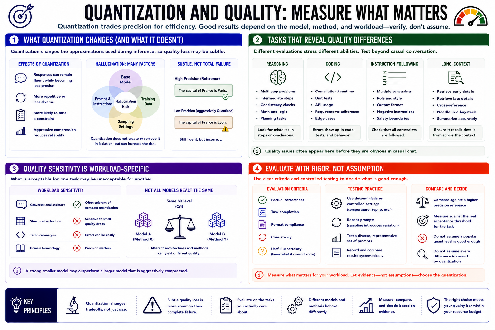

Quality Tradeoffs
Connecting to LMS... Progress: in progress

Narration
Quantization changes the approximations used during inference, so quality loss may be subtle rather than a complete failure. A response can remain fluent while becoming less precise, more repetitive, or more likely to miss a constraint. Hallucination is influenced by the base model, prompt, data, and sampling as well as precision; quantization does not create or remove it in isolation, but aggressive compression can reduce reliability.
Reasoning tasks may reveal mistakes in intermediate steps or consistency. Coding tasks can expose errors through compilation, tests, API use, or adherence to requirements. Instruction following should be evaluated with prompts containing several constraints. Long-context tests should check whether the model retrieves details from early and late portions rather than merely producing plausible prose.
Quality sensitivity is workload-specific. A conversational assistant may tolerate a compact quantization that is unacceptable for structured extraction, technical analysis, or domain terminology. Different model architectures and quantization methods can react differently at the same nominal bit level. A strong smaller model may outperform a larger aggressively compressed model.
Evaluate outputs with clear criteria: factual correctness, task completion, format compliance, consistency, and useful uncertainty. Use deterministic or controlled settings where possible and repeat prompts because sampling introduces variation. Do not assume that a popular quant level is good enough, and do not assume every difference is caused by quantization. Compare against a higher-precision reference and the real acceptance threshold for the task.